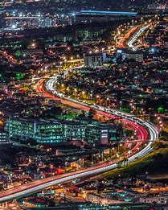

HOME PAGE
AFRICAN BEAUTY
Traveling around this vast land and touring the vibrant cities, visitors can learn about the nation's turbulent history: in Cape Town, one of the world's most beautiful cities; in Durban, a melting pot of cultures and cuisines, at the poignant museums and galleries in Johannesburg, and in Soweto, birthplace of Nelson Mandela, who helped birth democracy in this astoundingly diverse nation.
Capetown
Durban
Gauteng
Mpumalanga
Pretoria
click here to go to bookings